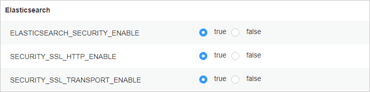

如果您希望OceanProtect与大数据平台通信过程中进行数据加密，实现安全通信，请参考本节在大数据平台开启安全加密模式并导入CA证书。否则可忽略本节。
本节以FusionInsight Manager 8.2.0版本为例说明相关操作。不同大数据平台操作略有差异，请参考对应大数据平台的产品文档。

获取CA证书并在大数据平台更换证书，请妥善保管获取到的证书，后续注册ElasticSearch集群时需要使用。具体操作可参考《 MapReduce服务(MRS) x.x.x-LTS 使用指南(for 华为云Stack x.x.x) 》中的“更换CA证书”章节。
可登陆ElasticSearch节点，进入ElasticSearch安装目录的config/certs目录下，找到http-ca.crt证书文件并下载获取（证书文件在安装Elasticsearch时已配置，不需要单独导入）。